1008C19 engine link mount - r r
- Path
- Procedures > 10 ENGINE > 1008 POWER UNIT SUPPORTS > 1008C power unit reaction elements > 1008C19 engine link mount - r r
- Kind
- repair procedure (removal / refitting; the operation number is the code)
- Applies to
- engines: 2.0 TS; all production periods
- Interactive page
- https://sloeber94.github.io/elrnDB-a147/en/#/3024927
Applies to: engines: 2.0 TS; all production periods
 Removing
Removing
 Refitting
RefittingPosition the vehicle on the ramp.
Ensure that the ignition key is in the OFF postition, then disconnect the battery negative terminal.
 | Name | Connector |
|---|---|---|
- | Battery |
Proceed with the removal 1016A40 ignition coil cover on cylinder head- r+r .
Proceed with the removal 1008C10 power unit upper reaction link r r .
1. Undo the bolts (1a) and remove the power assisted steering fluid reservoir (1b) without disconnecting the pipes.
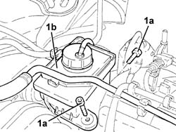
Applies to: engines: 2.0 TS; all production periods
1. Undo the bolts (1a) and remove the power steering fluid reservoir mounting bracket (1b).
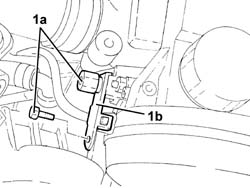
Applies to: engines: 2.0 TS; all production periods
Proceed with the removal 4450B12 front or rear wheels (two) - r+r .
Proceed with the removal 7055B64 Engine compartment DUST shield in front wheel arch (one), left or right - R.R. (Right and left sides).
Proceed with the removal 7055B54 under-engine guard - r r .
Proceed with the removal 1072C44 exhaust manifold heat shield on bulkhead - r+r .
Proceed with the removal 1080B40 catalytic pre-converter - r r .
Proceed with the removal 1008A44 rear rigid mount - r r .
Proceed with the removal 4410D13 front suspension beam - r r .
Loosen the bolts fixing the power assisted steering pump drive pulley.
Proceed with the removal 1092G10 single engine belt r r .
Proceed with the removal 1092A10 Crankshaft services PULLEY - R.R. .
Proceed with the removal 1092G20 engine component single belt fixed tensioner - one - r + r .
Proceed with the removal 1092G14 engine component single belt mobile tensioner - r + r .
Proceed with the removal 1032D12 timing system protective cover(s) - r + r .
Proceed with the removal 1092E10 counter-rotating shaft drive toothed belt - r + r .
1. Completely undo the bolts (1a) loosened previously and remove the power assisted steering pump pulley (1b).
2. Undo the bolts (2a) and move the power assisted steering pump (2b) away from the support.
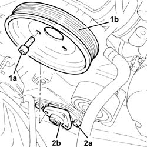
Applies to: engines: 2.0 TS; all production periods
1. Undo the bolts (1a) and remove the intermediate drive shaft (1b).
2. Remove the dust excluder.
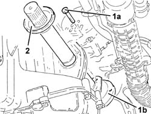
Applies to: engines: 2.0 TS; all production periods
1. Disconnect the electrical connection for the insufficient engine oil pressure sensor.
| Name | Connector |
|---|---|---|
1 | Engine oil pressure sensor |
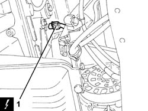
Applies to: engines: 2.0 TS; all production periods
1. Undo the bolts (1a) and remove the modular intake manifold mounting bracket (1b) after having released it from the electrical wiring.
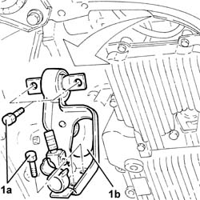
Applies to: engines: 2.0 TS; all production periods
1. Disconnect the electrical connections from the alternator.
| Name | Connector |
|---|---|---|
1 | Alternator |
2. Undo the upper alternator fixing bolt.
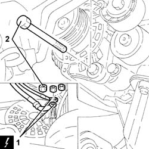
Applies to: engines: 2.0 TS; all production periods
1. Undo the bolts (1a) and remove the rear alternator mounting bracket (1b).
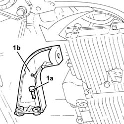
Applies to: engines: 2.0 TS; all production periods
1. Undo the bolts (1a) and remove the power assisted steering pulley protection (1b).
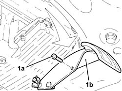
Applies to: engines: 2.0 TS; all production periods
1. Undo the lower bolt (1a) and remove the alternator (1b).
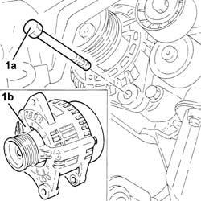
Applies to: engines: 2.0 TS; all production periods
1. Undo the bolt securing the crankcase sump to the support on the engine for reaction rod, various engine components and intermediate driveshaft.
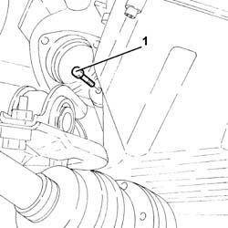
Applies to: engines: 2.0 TS; all production periods
1. Undo the bolts (1a) and remove the support on the engine for the reaction rod, various engine components and intermediate driveshaft (1b).
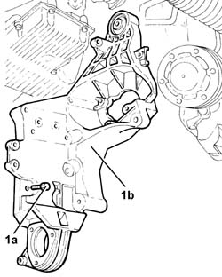
Applies to: engines: 2.0 TS; all production periods
Refitting
Removing1. Place the support on the engine for the reaction rod, various engine components and intermediate driveshaft (1a) back in its housing and secure it by tightening the bolts (1b) to the recommended torque.
 | Fastening | Component | Ø | Value (daNm) |
|---|---|---|---|---|
- | Bolt | ENGINE LINK AND VARIOUS COMPT.MOUNTS | M8 | 2.3 ÷ 2.8 |
| Fastening | Component | Ø | Value (daNm) |
|---|---|---|---|---|
- | Bolt | ENGINE LINK AND VARIOUS COMPT.MOUNTS | M10 | 4.5 ÷ 5.5 |
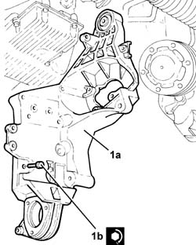
Applies to: engines: 2.0 TS; all production periods
Tighten the bolt fixing the crankcase sump to the support on the engine for the reaction rod, various engine components and intermediate driveshaft.
Place the alternator back in its housing and support it using the lower bolt without tightening it.
Place the alternator rear mounting bracket back in its housing and secure it using the bolts.
Tighten the bolts fixing the alternator to the recommended torque.
| Fastening | Component | Ø | Value (daNm) |
|---|---|---|---|---|
- | Bolt | ALTERNATOR ASSEMBLY | M12 | 6.3 ÷ 7.7 |
| Fastening | Component | Ø | Value (daNm) |
|---|---|---|---|---|
- | Bolt | ALTERNATOR ASSEMBLY | M10 | 4.5 ÷ 5.5 |
Place the power assisted steering pump pulley protection back in its housing and secure it using the bolt.
Connect the electrical connections to the alternator.
Place the modular intake manifold mounting bracket back in its housing and secure it using the bolts.
Secure the electrical wiring to the mounting bracket for the modular intake manifold.
Connect the electrical connection to the engine oil pressure warning sensor.
1. Place back in its housing the intermediate drive shaft (1a) complete with dust cover (1b) and secure it with its bolts (1c) to the specified torque.
| Fastening | Component | Ø | Value (daNm) |
|---|---|---|---|---|
1c | Bolt | INTERMEDIATE DRIVE SHAFT | M8 | (Support side) 2.5÷2.8 |
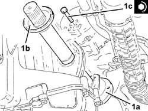
Applies to: engines: 2.0 TS; all production periods
1. Refit the power steering pump (1a) in its seating and tighten its bolts (1b) to the specified torque.
| Fastening | Component | Ø | Value (daNm) |
|---|---|---|---|---|
1b | Bolt | POWER STEERING PUMP | M8 | (Support side) 2.3 ÷ 2.8 |
2. Place the power assisted steering pump drive pulley (2a) back in its housing and secure it using the bolts (2b) without tightening them.
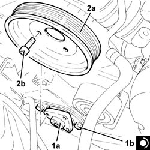
Applies to: engines: 2.0 TS; all production periods
Proceed with the refitting 1092E10 counter-rotating shaft drive toothed belt - r + r .
Proceed with the refitting 1032D12 timing system protective cover(s) - r + r .
Proceed with the refitting 1092G14 engine component single belt mobile tensioner - r + r .
Proceed with the refitting 1092G20 engine component single belt fixed tensioner - one - r + r .
Proceed with the refitting 1092A10 Crankshaft services PULLEY - R.R. .
Proceed with the refitting 1092G10 single engine belt r r .
Tighten the power steering pump fixing bolts to the recommended torque.
| Fastening | Component | Ø | Value (daNm) |
|---|---|---|---|---|
- | Bolt | POWER STEERING PUMP DRIVE PULLEY | M8 | (Power assisted steering pump side) 2.3÷2.8 |
Proceed with the refitting 4410D13 front suspension beam - r r .
Proceed with the refitting 1008A44 rear rigid mount - r r .
Proceed with the refitting 1080B40 catalytic pre-converter - r r .
Proceed with the refitting 1072C44 exhaust manifold heat shield on bulkhead - r+r .
Proceed with the refitting 7055B54 under-engine guard - r r .
Proceed with the removal 7055B64 Engine compartment DUST shield in front wheel arch (one), left or right - R.R. (Right and left sides).
Proceed with the refitting 4450B12 front or rear wheels (two) - r+r .
Place the power assisted steering fluid reservoir mounting bracket back in its housing and secure it using the bolts.
Refit in its seating the power steering fluid reservoir and secure it with its bolts.
Proceed with the refitting 1008C10 power unit upper reaction link r r .
Proceed with the refitting 1016A40 ignition coil cover on cylinder head- r+r .
Connect the battery terminal (-).
Remove the car from the ramp.
Topics linked from this page (18)
- 1008A44 rear rigid mount - r r
- 1008C10 power unit upper reaction link r r
- 1016A40 ignition coil cover on cylinder head- r+r
- 1032D12 timing system protective cover(s) - r + r
- 1072C44 exhaust manifold heat shield on bulkhead - r+r
- 1080B40 catalytic pre-converter - r r
- 1092A10 Crankshaft services PULLEY - R.R.
- 1092E10 counter-rotating shaft drive toothed belt - r + r
- 1092G10 single engine belt r r
- 1092G14 engine component single belt mobile tensioner - r + r
- 1092G20 engine component single belt fixed tensioner - one - r + r
- 4410D13 front suspension beam - r r
- 4450B12 front or rear wheels (two) - r+r
- 7055B54 under-engine guard - r r
- 7055B64 Engine compartment DUST shield in front wheel arch (one), left or right - R.R.
- A1B Battery ( Connectors )
- A10 Alternator
- K30 Engine oil pressure sensor (switch)